In this guide, I will talk about how to clear the permanent stage present in Contingency Contract #4.
What is Contingency Contract?
Contingency Contract is a seasonal event (Once a limited time event) that rewards players for completing higher difficulties with a significant amount of resources.
There are two types of stages in this event: Permanent Stages and Daily Stages.
Daily Stages:
This consists of maps that are inside the rotation which changes every day. Each maps has their own unique modifiers which increases the difficulties of said maps. There are also different challenges each day to complete to earn event currencies that are called Contract Bounty.
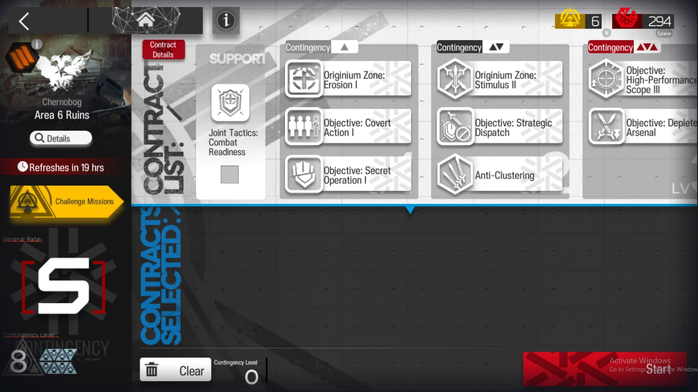Permanent Stages:
This is each season's featured map that also has modifiers to make the stage more difficulties. However, this time the modifiers are in wider range and it can become a lot more difficult to complete. This is where you may need endgame characters to finish up higher difficulty levels.
There will be locked contracts(aka modifiers) and the initial available contracts for you to choose from. To unlock said locked contracts, you will have to complete the stage with as many contracts as the requirement says. (You do not need to select all the contracts at once) The number of contracts you have completed is shown on the top of your screen as a greenish tick box.
However, there will be a few contracts that not only require a set amount of contracts to complete, but also yellow triangular tokens to unlock them. They can be obtained from completing various challenges from permanent and daily stages.
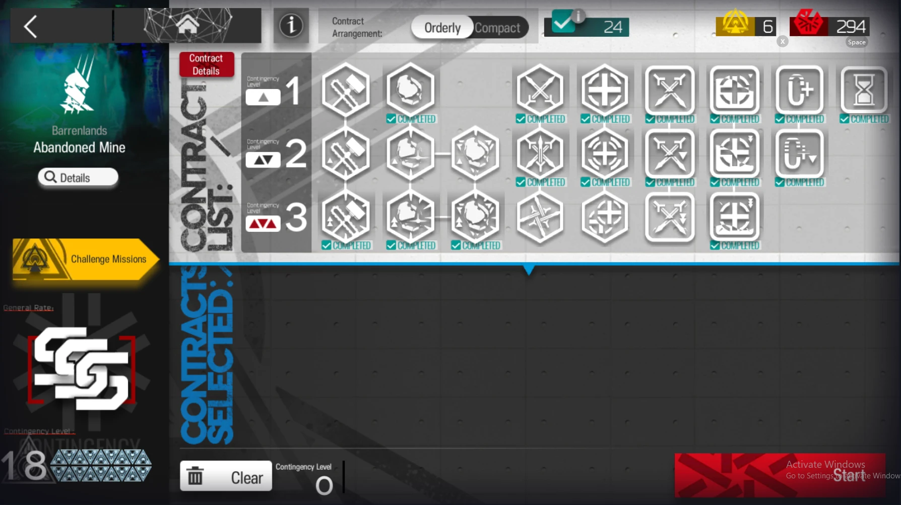As you clear each challenges, you will receive Contract Bounty currencies, which can be used in the currency shop to obtain various leveling resources and skins.
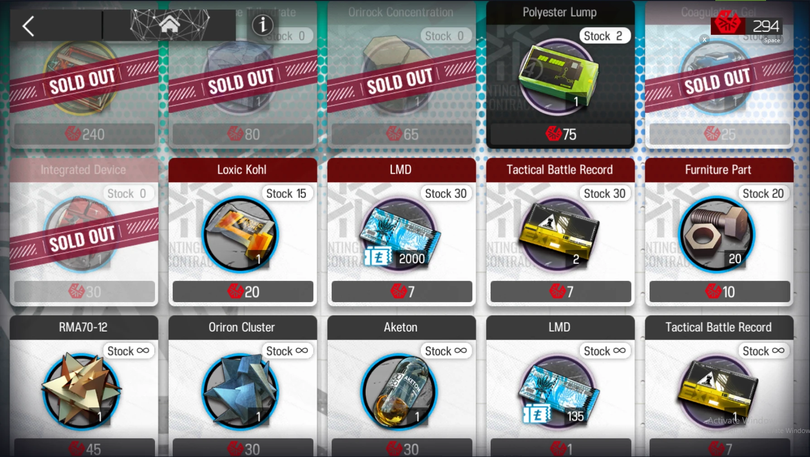With each contracts, the difficulty (Now called as Risk) of the map is increased.
The table below shows the risk of a map cleared by the ratings:
| Rating | Risk |
|---|---|
| D | Not attempted |
| C | 0-1 |
| B | 2-3 |
| A | 4-7 |
| S | 8-11 |
| SS | 12-15 |
| SSS | ≥16 |
Before attempting to complete higher Risk levels in the permanent stages, you should complete the training stages, which includes all of the maps in rotation for the daily stages.
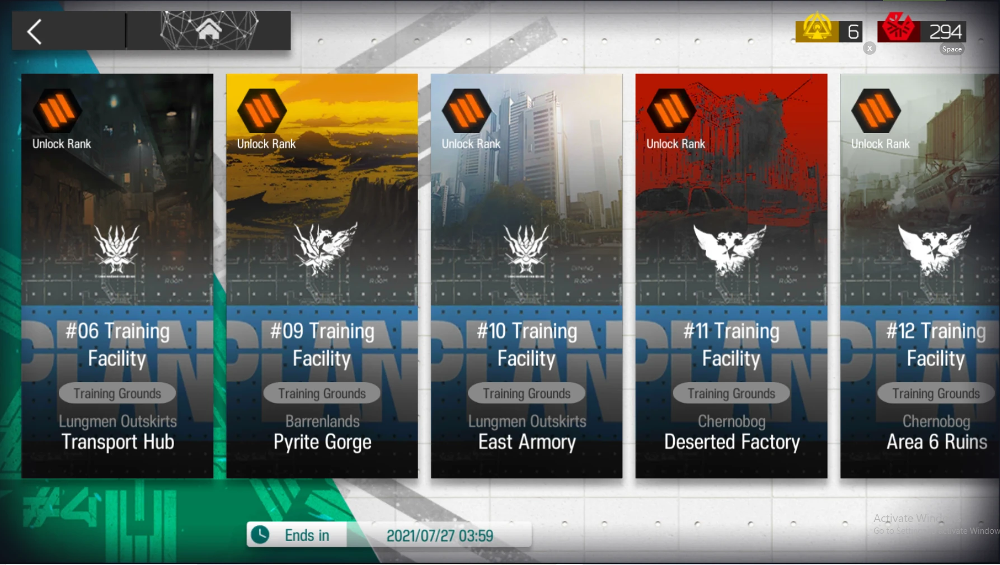Medals
It is not necessary to get it for additional rewards, but it is a nice thing to have to show off to your friends who plays Arknights that you have successfully completed all of the challenges that this CC#4 gave.
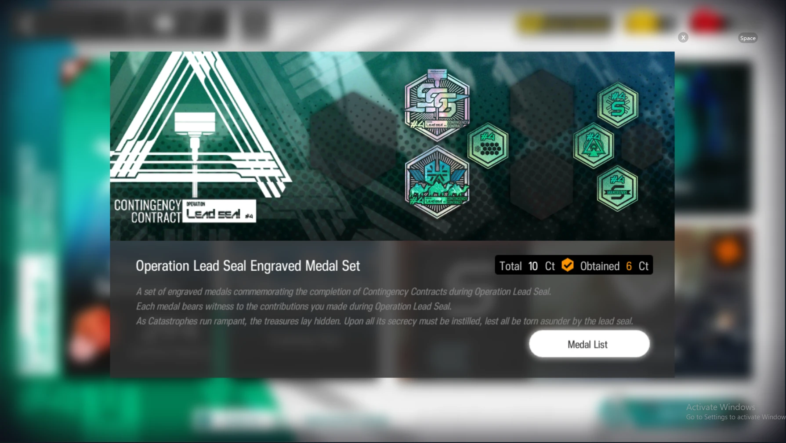Rewards for above Risk 18 in permanent stages
The highest risk that the game gives rewards for is Risk 18. After this risk, there will no longer be any rewards for completing a higher risk. (Besides having the reward of increasing your ego) So if you cannot complete higher than Risk 18, you are not missing anything out besides the uncompleted challenges. But if u still want to obtain a higher risk level, you are free to do so.
Yellow Tokens
By obtaining more yellow tokens, you can exchange them for supply crates after the event ends. The supply crates contains various types of leveling materials, so it is adviced to obtain as many as possible yellow tokens as possible before the event ends.
Now of course, you can choose to finish Risk 18 on your own, but to those who struggle to find out how to complete it, you can continue to read below to find out how.
The contracts selected for Risk 18 is shown below. You can change them here and there, but these are the contracts I selected for my setup. The one contract you cannot add is the last line of defense contract, as it is vital to allow 2 enemies through.
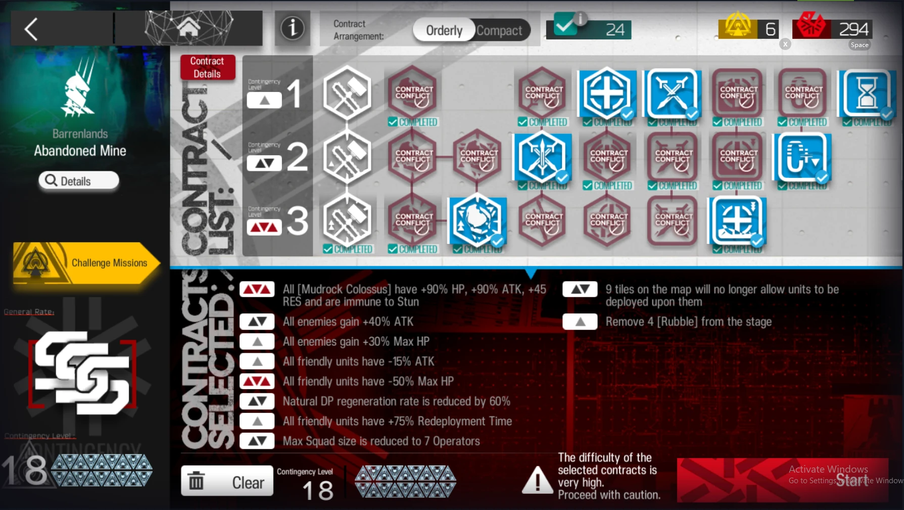Below here is my team composition. This requires Ejyafjalla S3M3 and Saria S3M3, or this setup is destined to fail. The rest are interchangable. E.g Projekt Red to replace phantom for Skill 2.
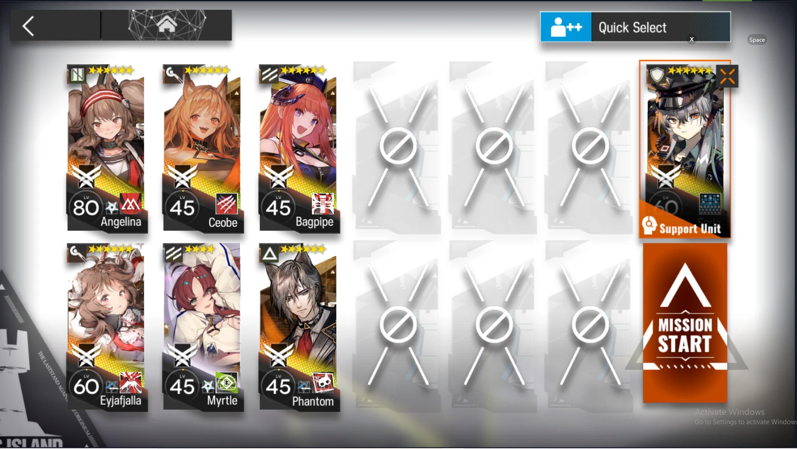Step 1:
Deploy the team setup as follow:
Myrtle, Angelina, Ejyafjalla, Ceobe, Saria
You cannot place anyone else down besides stalling characters after you place down Saria. This is to direct the ranged units' attention to Saria, as the other units will not survive their attacks while Saria is able to soak up their damage easily.
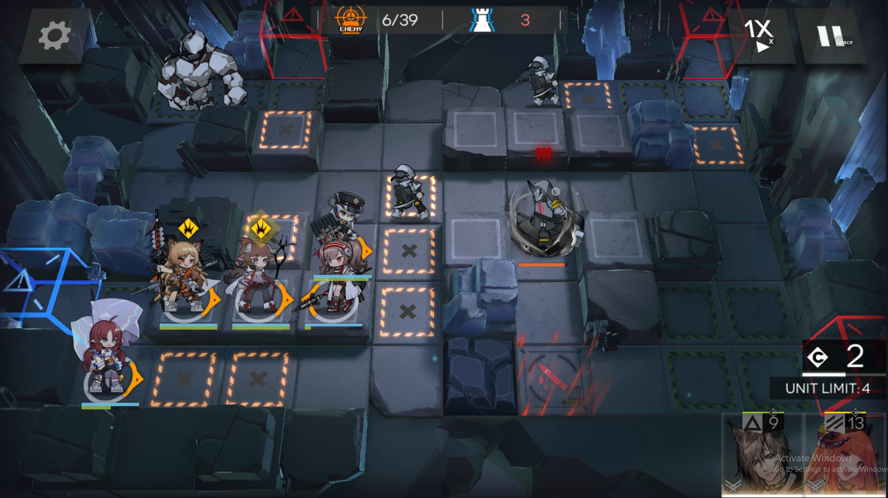Step 2:
Allow the boulder to pass, it is the whole point of this strategy; to allow the 2 boulders to walt right through your defenses. The boulder will draw attention of our ranged units away from the enemies behind. To counter this, deploy Phantom to stun and stall the enemies behind. Retreat Myrtle while you are at it too.
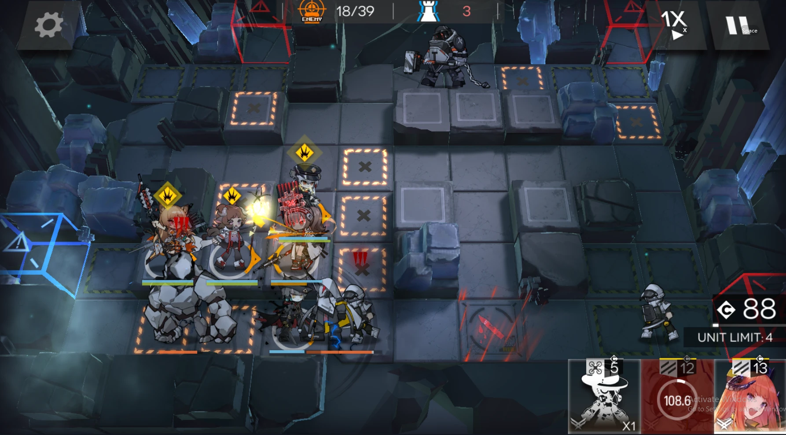Step 3:
Around 27+ enemies killed, 2 bosses will spawn; Mudrock and Big Bob. Mudrock is able to gain shields that prevents her from taking damage unless the shield is broken. After a period of time, her shields will recharge. Both bosses boasts a high amount of defense, thus requiring all of the ranged units to deal arts damage.
Once Big Bob reaches 2 tiles above Ceobe and Mudrock right below Angelina, activate both Ejyafjalla's and Saria's skill to lower their RES defense and melt both bosses in one go.
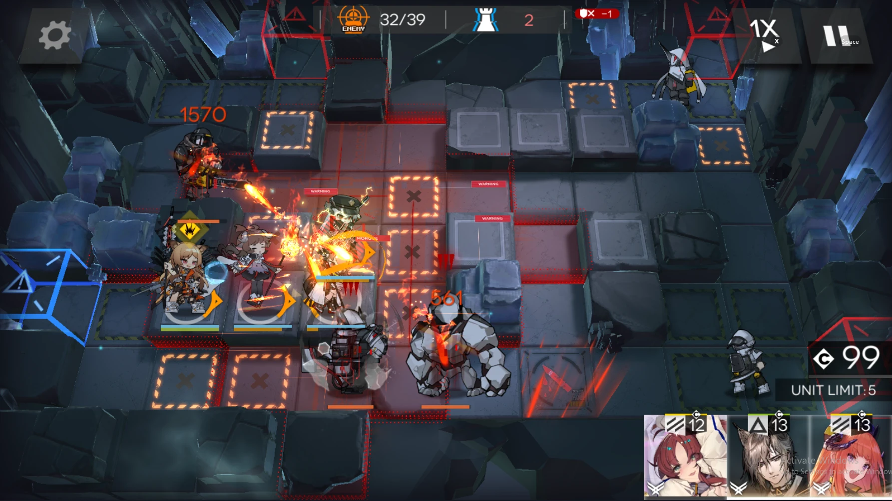Step 4:
There will be a few more enemies behind the 2nd boulder. Deploy Phantom to stall them for your ranged units to kill. And just to be safe, activate Ceobe's skill to kill them quicker.
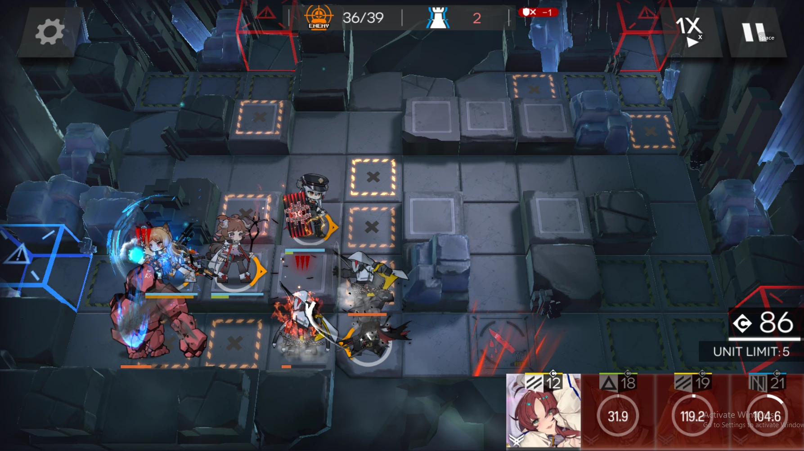Finale
If you followed through this without any problems, you should be able to complete Risk 18 easily. (Provided your units are as leveled as mine.)